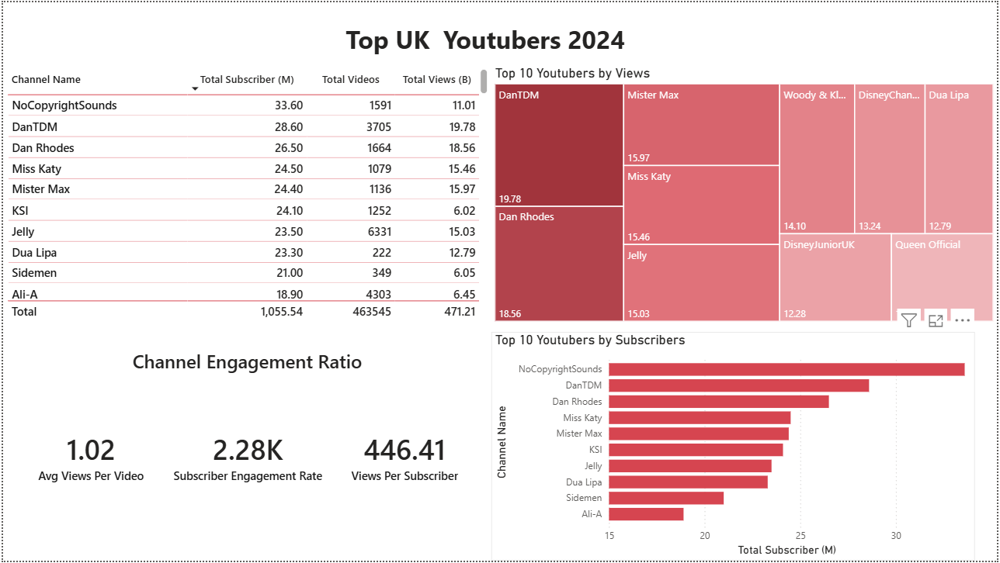
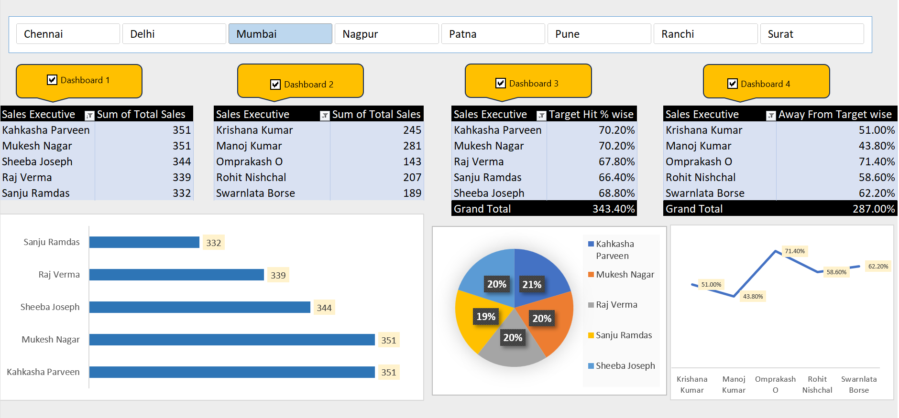
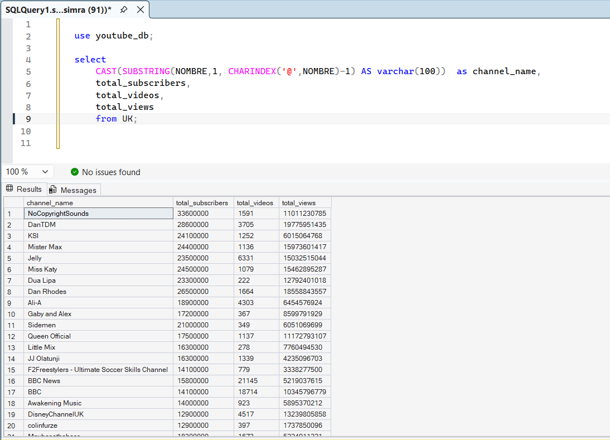

Simran Jain
Aspiring Data Analyst | Business Intelligence
Data Analytics enthusiast skilled in SQL, Python, Excel and Power BI. Passionate about transforming raw data into meaningful insights that support data-driven decision making.
Download Resume Contact3+
Data Projects
5+
Tools Used
10K+
Rows Analyzed
2+
Dashboards Built
Professional Summary
Strong foundation in data analysis, SQL querying, dashboard building and statistical analysis. Experienced in data cleaning, exploratory analysis and visualizing insights for business decision making.
Technical Skills
Key Projects
Sales & Revenue Analysis
- Analyzed 10,000+ sales records
- Performed data cleaning using Python
- Used SQL for revenue calculations
- Built Excel KPI dashboard
Customer Retention Analysis
- Analyzed repeat customers
- Calculated Customer Lifetime Value
- Used GROUP BY and HAVING queries
- Generated retention insights
Data Analytics Dashboards
Blinkit Sales Analysis Dashboard
Built an interactive Power BI dashboard analyzing Blinkit outlet performance, sales trends, and product categories.
- Analyzed $1.2M+ total sales
- Created KPIs for average sales and rating
- Used slicers for outlet location and item types
- Identified top performing outlet tiers

Top UK YouTubers 2024 Dashboard
Power BI dashboard analyzing top UK YouTube channels by views, subscribers and engagement metrics.
- Analyzed subscriber growth and views
- Built engagement ratio metrics
- Visualized top creators by views
- Compared channel performance

Sales Executive Performance Dashboard
Developed a multi-tab interactive performance tracker for sales teams across 8 major Indian cities including Mumbai, Delhi, and Pune.
- Built 4 synchronized dashboards tracking Sales, Target Hits, and Gap Analysis
- Implemented city-wise slicers for real-time regional performance filtering
- Visualized sales distribution using Radar (Line) and Pie charts for executive review
- Automated "Grand Total" calculations for Target Hit percentages and volume

SQL Data Cleaning & Analysis
SQL project analyzing YouTube dataset using advanced queries for data transformation and reporting.
- Used SUBSTRING and CHARINDEX for cleaning
- Extracted channel names from raw dataset
- Analyzed subscribers, views and video counts
- Prepared dataset for dashboard analysis

Contact
Email: simranjain6103@email.com
LinkedIn: linkedin.com/in/simranjain6103
GitHub: github.com/simranjain6103
Location: India